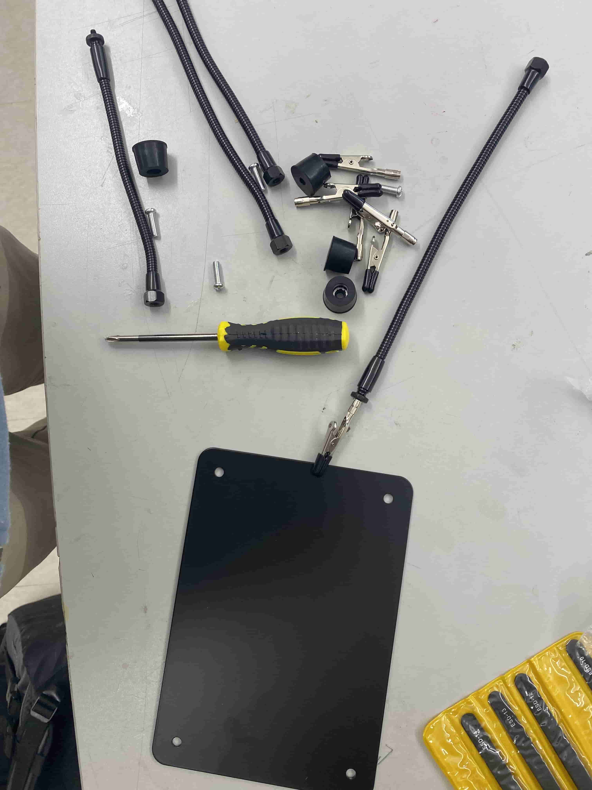
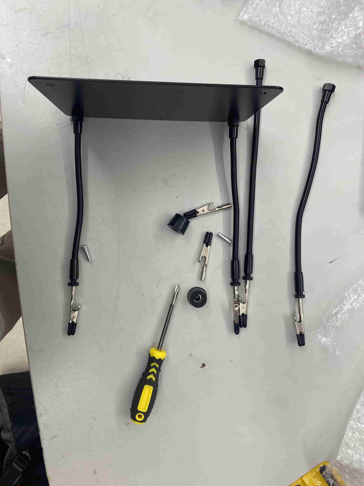
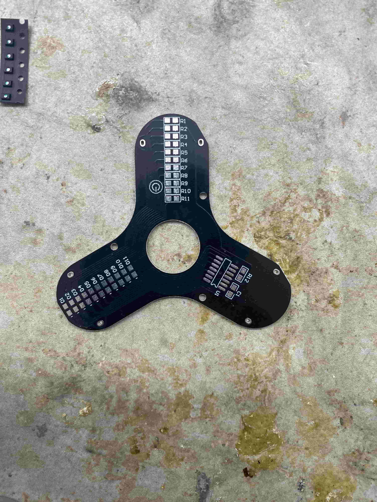
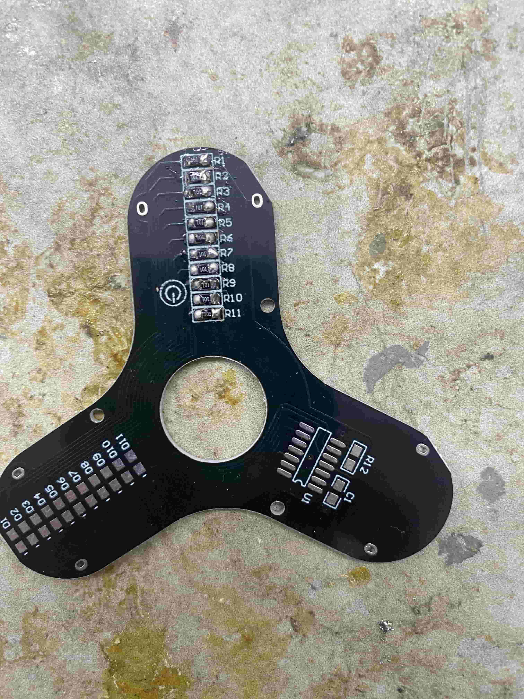
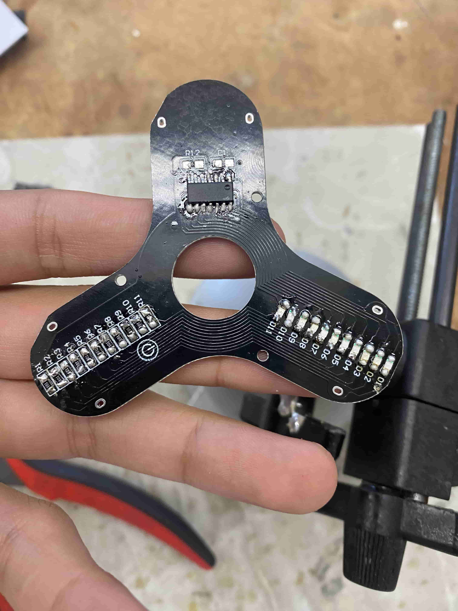
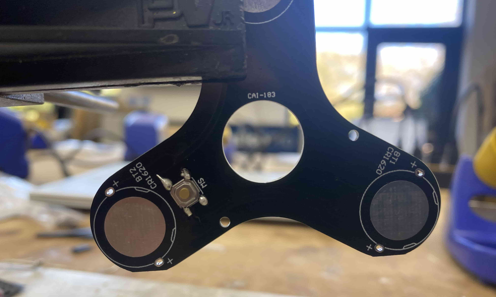
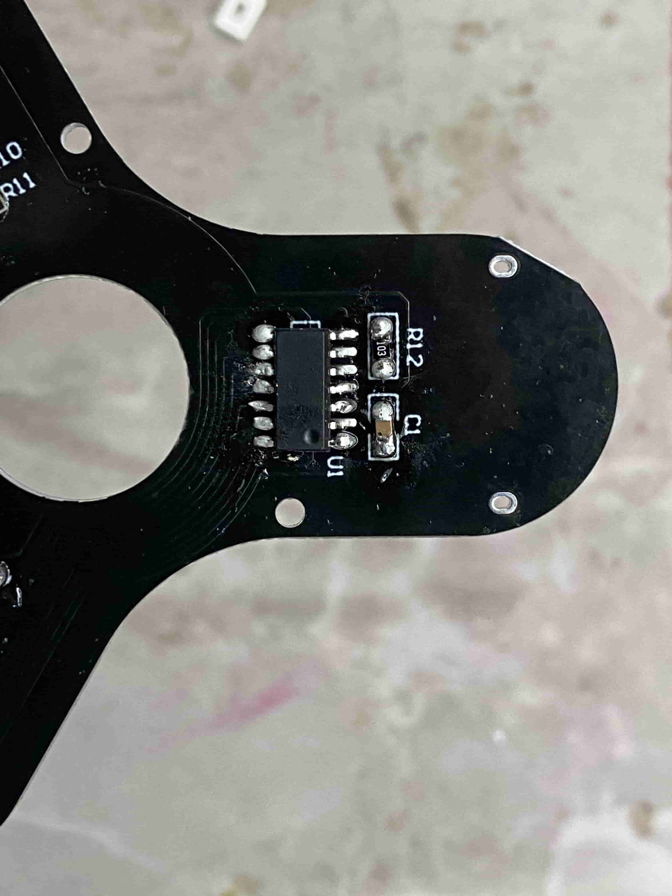
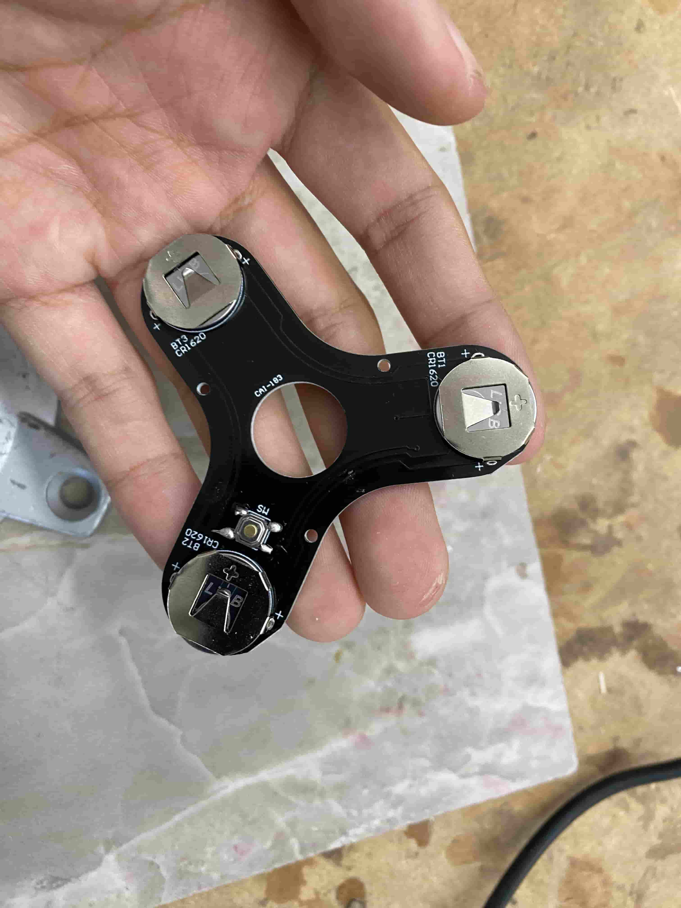
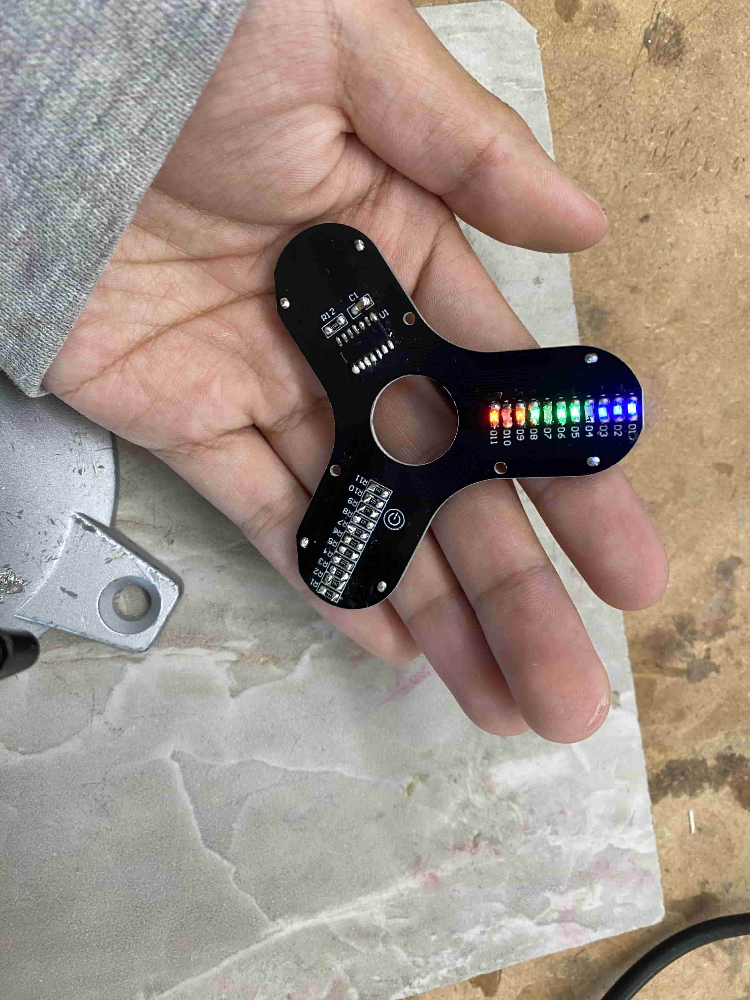

Three Leaf Gyroscope Spinner
Materials
Helping Hand:
- 1 Screwdriver
- 4 Legs
- 4 Screws
- 4 Alligator Clips + Spares
- 4 Stand Pads
- 1 Stand Base
Gyroscope Spinner:
- 11 100 Ohm Chip Resistors
- 1 10k Ohm Chip Resistor
- 1 Chip Capacitor
- 11 LEDs
- 1 Switch
- 1 MCU Chip
- 3 Battery Clips
- 1 Custom PCB Board
- 1 Ball Bearing
- 3 Screws
- 2 Shells and Caps
Helping Hand Assembly
Because this was my first time soldering after starting the Fab program, I had to build a helping hand for me to keep and use at home before I started building the three leaf gyroscope spinner. This helping hand was a lot better than the ones I had used before as it had 4 different clips that could hold an item in almost any orientation.
Here are all the materials:

I first took all the materials out of the packaging.

I then attached the alligator clips onto the legs. I put in the first two shorter legs into the base and screwed them in.

After attaching the final two longer legs onto the base of the stand, the helping hand was complete.

Spinner Assembly
After assembling the soldering stand, I started soldering together the spinner. I built a three leaf gyroscope spinner (fidget spinner) with LEDs. The spinner uses a ball bearing to spin around the center and is able to change the patterns on the LEDs. This build was intended to allow me to practice my surface-mound soldering skills.
Here is the frame before any assembly:

First, I soldered one of the sides on each 100 ohm resistor to align them all.

After everything was aligned, I soldered on the other side of the resistors.

I then soldered on the LEDs and the MCU chip.

Next, I soldered on the button.

I then soldered on the capacitor.

Next, I soldered on the battery holders and put the batteries in it.

The actual board of the spinner is now complete. Here is the spinner when I was testing the LEDs to make sure they worked before putting the framing on:

After I verified that the components were working, I the ball bearing in and encased it all in the plastic frame.
 |
 |
Here is the completed spinner as with LEDs on as it spins. The LEDs are able to light up in different sequences to form different patterns when spinning, but the camera on my phone was unable to capture the patterns becuase it wasn't very receptive to fast moving objects.